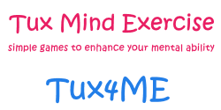

Home
Games
About
Tux4Kids
Feedback
View Source
Contributors
Tux4ME
Hi kids!

Hi Kids, Welcome to Tux4ME
Wear your thinking caps!
Use the drawer menu to navigate to games
Enjoy the games! Thank you!


Steps
Attention
Memory
Reasoning
Speed
Flexibilty
Tux Mind Exercise (Tux4ME)
Simple games to enhance your mental ability
Tux4ME is designed to develop and enhance mental power. It include a series of game, each testing and improving player’s
Reasoning capabilities, Speed, Attention, Flexibility, Memory power.
There will be simple games, which you can play daily. This will help you to exercise your brain to make it active and healthy. It is a web app for fun and self improvement

Tux4Kids
Tux4Kids develops high-quality software for kids, with the goal of combining fun and learning into an irresistable package. Our software is free: you can download it for use at home or onto hundreds of computers in a school. We support all major platforms, including Windows, Macintosh, and Linux/Unix. Our programs are used by people around the globe, and they have been translated into dozens of different languages. As open-source software, these programs can be freely extended or customized, and they are supported by active communities of volunteer developers.
WebSite
Your valuable feedback or suggestions !
Tux4ME developers
Student (Author)
Vignesh S
Mentor
Scott McCreary
Source Code
GitHub
Developed With
by Tux4kids Organization
Developed under Google summer of code - 2015
Tux4ME Contributors
New Games
Vatsala Swaroop
New features
Deepak Sharma, Menaka
Resolved bugs
Karthikeyan
We sincerely thank and acknowledge your Contributions,